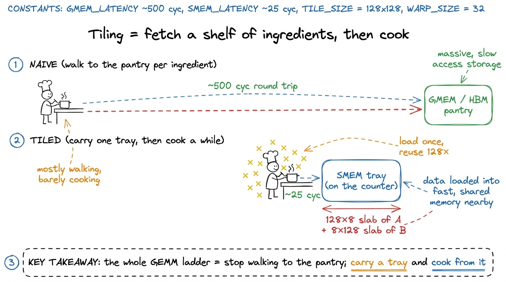
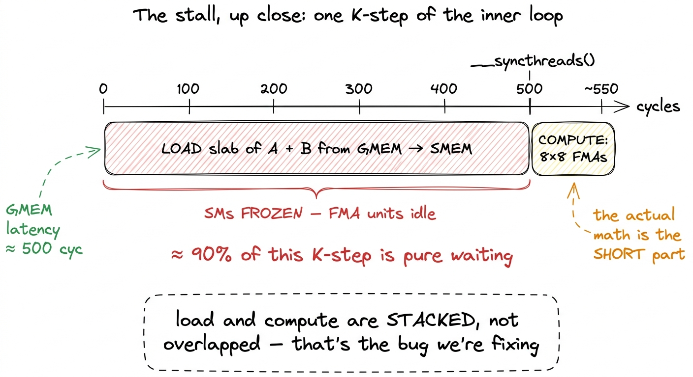
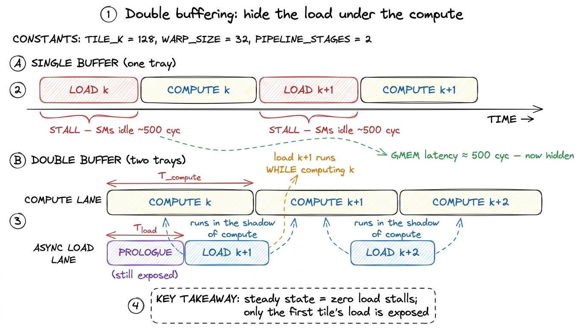
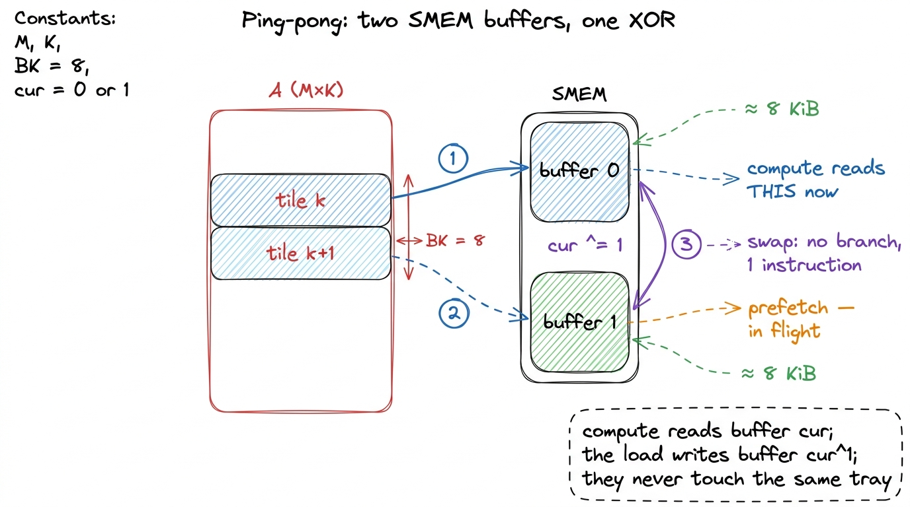
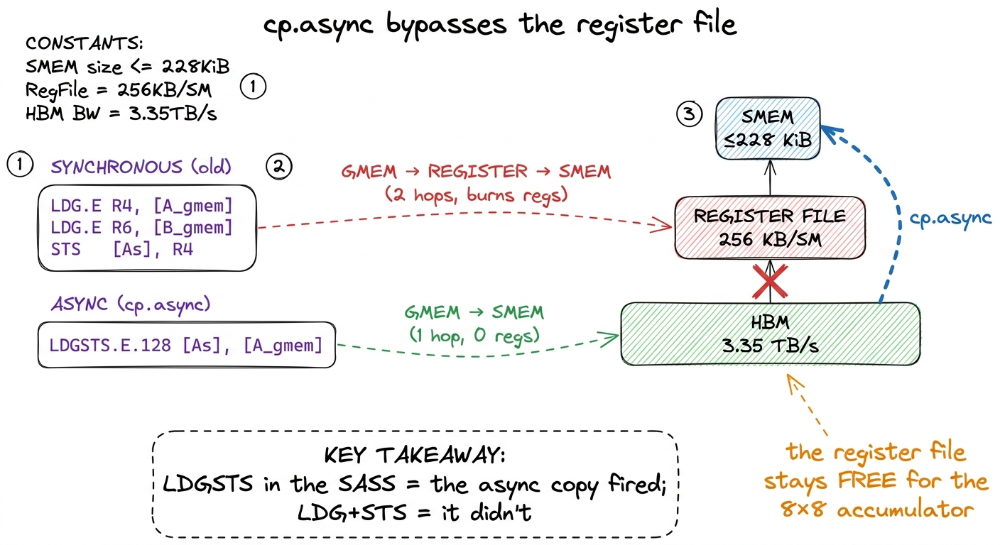
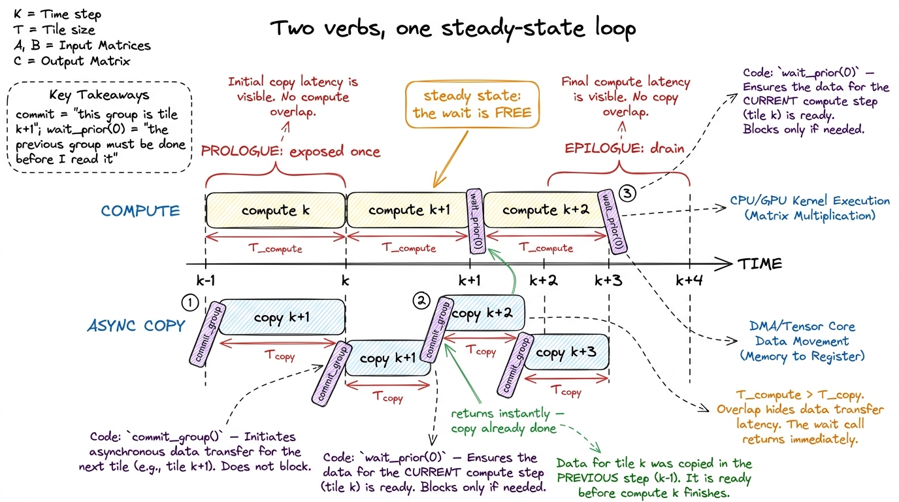

Double buffering & cp.async
By the end of the last kernel we were at 93.7% of cuBLAS with warptiling, and every remaining percent gets harder to find. When you are that close to a library NVIDIA has tuned for fifteen years, the profiler stops complaining about the obvious things — coalescing is fixed, the arithmetic intensity is high, the register file is packed with a fat 8×8 accumulator tile per thread. The cheap wins are gone. So this article is about the last big structural idea on the ladder, and it is a beautiful one: hiding the time you spend waiting for memory underneath the time you spend doing math.
But before we can hide a stall, we have to be sure a stall is actually there — and understand, from the hardware up, why it is there. Let me start from the beginning, because if you have not written a tiled GEMM before, everything that follows will feel like sleight of hand. It is not. It is just careful bookkeeping about who is waiting for what.
First, what is the loop even doing?
A GEMM computes C = A × B. If A is M×K and B is K×N, then C is M×N, and each entry of C is a dot product down the shared K dimension. That is a lot of numbers to reread. The naive kernel — the very first one on this ladder — reloads every operand straight from global memory (GMEM) for every multiply, and that is hopeless: GMEM is the slow, far-away DRAM on the other side of the chip, and a load from it takes on the order of 500 cycles to come back.1 These are round numbers. On Hopper a GMEM access is roughly 400–600 cycles depending on where it hits (L2 vs a full HBM trip); shared memory is ~20–30 cycles; a register read is effectively 1 cycle. The exact figures move per architecture, but the ratios — GMEM is ~20× slower than SMEM, SMEM is ~20× slower than a register — are what drive every decision in this article.
So the whole GEMM ladder is one long war against that 500-cycle number. The winning move is tiling: don't stream the matrices past the ALUs, chop them into small square blocks that fit in fast on-chip memory, load a block once, and reuse it many times before you throw it away. Concretely, a thread block claims a BM×BN output tile of C — say 128×128 — and marches across the K dimension in steps of BK — say 8. At each step it pulls a 128×8 slab of A and an 8×128 slab of B down into shared memory (SMEM), a small fast scratchpad that lives right on the streaming multiprocessor (SM). Then every thread reads its slivers out of SMEM and does its multiplies. Reuse turns hundreds of GMEM trips into one.

figure rendering · The mental model for the entire article: global memory is a far-away pThat mental model — pantry far away, tray on the counter — is the one picture I want you to hold onto. Everything below is about a subtle flaw in the timing of when we walk to the pantry versus when we cook. Keep the cook in your head.
The question: what is a near-perfect kernel still waiting on?
At 93.7% the reuse is excellent. So I did what you always do when the easy wins are gone: I pointed Nsight Compute at the inner loop and asked the question from the three regimes one more time — is this kernel compute-bound, bandwidth-bound, or latency-bound? What is it waiting on?
The answer surprised me the first time, so let me flag why it is surprising. We had already fixed bandwidth — we are reusing tiles beautifully, the arithmetic intensity is way up on the roofline, we are not choking the HBM pipe. And we are clearly not purely compute-bound, or we would already be at 100%. The thing left over is latency. Not how much data we move, but how long we sit still waiting for each chunk to arrive.
Here is exactly where it bites. Look at the inner loop in words. For each step along K we do two things, strictly in order:
- Load a
128×8slab ofAand an8×128slab ofBfrom GMEM into the SMEM buffer, then__syncthreads()so every thread agrees the tray is full. - Compute — every thread reads its slivers out of that SMEM buffer and updates its
8×8register accumulator.
Step 2 cannot begin until step 1 finishes, because they touch the same buffer — the same tray. You cannot start cooking from a tray that is still being loaded. That serialization is the whole problem. The GMEM load takes a few hundred cycles; the compute is comparatively fast; so at the top of every single K-tile the entire block freezes, staring at the pantry, waiting for the next tray. The FMA units — the fused-multiply-add lanes that are supposed to be the busy heart of the chip — sit idle with nothing to chew on.

figure rendering · A single iteration of the current inner loop drawn to scale. The load"But wait," you might say, "isn't the GPU supposed to hide latency by switching to another warp?" Exactly right — that is the GPU's whole trick. When one warp stalls on memory, the warp scheduler swaps in another ready warp and keeps the ALUs fed. That is what occupancy buys you. So why doesn't it save us here?
Because we spent all our warps. A heavily register-tiled GEMM keeps an 8×8 accumulator — 64 floats — plus operand fragments in registers per thread, which pushes register usage to around 165–167 registers per thread. There are only 255 registers per thread to hand out and a fixed-size register file per SM, so at that pressure we run at roughly 18% occupancy — only a handful of warps resident per SM.2 This is the fundamental tension of the whole ladder. Register tiling is what made us fast (more accumulator per thread = more reuse = higher arithmetic intensity), but it is also what lowered our occupancy, which is exactly what disarmed the scheduler's latency-hiding. You cannot fix a register-tiled kernel's latency by "just adding more warps" — there is no register budget left to add them with. The fix has to come from somewhere other than occupancy. With only a few warps, when they all hit the top-of-K-step load at the same time, there is no fresh warp to switch to. Latency hiding by occupancy has run out of runway. We need a different lever.
The hypothesis: compute on tile k while tile k+1 is in flight
Here is the lever. The stall exists only because we load and then compute, using one tray. What if we had two trays?
Then the choreography changes. While the FMA units cook from tray A (tile k), we send someone to the pantry to fill tray B with tile k+1. When the cooking on tray A finishes, tray B is already full and waiting — we just swap trays and keep cooking, with no pause. The pantry trip for tile k+1 happened during the cooking of tile k, so its 500 cycles were spent in the background, invisibly, instead of stacked in front of us as dead time.
This is a software pipeline, and this specific two-tray version is called double buffering — also ping-pong buffering. It is the single most important idea in this article, and it is the same idea CPUs use for prefetching and that FlashAttention uses to overlap its softmax with its matmul. Once you see it here you will see it everywhere.

figure rendering · Single-buffered GEMM serializes load and compute, so the SMs stall eveNotice one honest detail in that figure: the very first load — the prologue — is still exposed. You have to fill the first tray before you can cook anything; there is no earlier compute to hide it under. But the prologue is one tile out of K/BK of them. On a real matrix with K = 4096 and BK = 8, that is one exposed load out of 512 — its cost amortizes to essentially nothing. There is a symmetric detail at the other end: the epilogue, when you compute the last tile and there is no next tile to prefetch, so the load lane goes quiet while the final compute drains. Prologue fills the pipe, epilogue empties it; both are one-tile costs that vanish on a large K. This "fill / steady-state / drain" shape is the signature of every pipeline, in hardware and in software.
First attempt: two buffers, still synchronous
The tempting thing is to build this with no new instructions at all. Just allocate two SMEM buffers and manually reorder the loop so that you prefetch tile k+1 into the other buffer before you compute tile k:
__shared__ float As[2][BM * BK];
__shared__ float Bs[2][BK * BN];
int cur = 0;
load_tile(As[cur], Bs[cur], /*k=*/0); // prologue: fill the first tray
__syncthreads();
for (int k = 0; k < K; k += BK) {
int nxt = cur ^ 1; // ping-pong the buffer index
if (k + BK < K)
load_tile(As[nxt], Bs[nxt], k + BK); // prefetch the NEXT tile
compute_tile(As[cur], Bs[cur]); // work on the CURRENT tile
__syncthreads();
cur = nxt; // swap trays
}The cur ^ 1 is the ping-pong: one XOR flips between buffer 0 and buffer 1 with no branch, no if, no divergence.3 salykova's kernel does exactly this XOR trick, but directly on the SMEM addresses rather than on an index — the copy toggles with sts_a_addr ^= 8192 for the A half and ^= 4096 for the B half, flipping the base pointer between the two halves of the double buffer. It works precisely because each buffer is a power-of-two-aligned block (16384 bytes for the padded A, naturally aligned for B), so a single XOR of one bit does the whole swap. Same idea as cur ^ 1, but it spends zero registers on a loop-carried index. It costs us 2× the SMEM. With BM = BN = 128, BK = 8 in FP32 that is two 128×8 buffers of A and two 8×128 of B, roughly 16 KiB + 8 KiB = 24 KiB per block — still comfortably inside the 228 KiB an H100 SM can devote to SMEM, so we have room to spare.4 The H100 has 256 KiB of combined L1/SMEM per SM, but you can carve out at most 228 KiB as shared memory — the rest is reserved so the L1 cache still exists. And about 1 KiB per block goes to CUDA system use, so the real budget is 228 − num_blocks × 1 KiB. Pipeline depth is literally bought with this budget: more buffers = more stages = more latency hidden = more SMEM spent. That is why Hopper's fat SMEM matters.

figure rendering · The two shared-memory buffers alternate every K-step. Compute drains oAnd it helped — a little. But when I profiled it, the win was disappointing, and the reason is worth slowing down for, because it reveals what "asynchronous" really has to mean.
Look at what load_tile actually compiles to. It issues ordinary LDG (load-from-global) instructions that write into registers, and only then STS (store-to-shared) instructions that copy register → SMEM. So the path is GMEM → register → SMEM, a two-hop journey. Two problems fall out of that. First, it burns registers we desperately need for the accumulator — the very resource that was already our bottleneck. Second, and more subtly, the LDG results have to retire into registers the same warp is still using for math, which means the compiler cannot slide the loads as far ahead of the compute as we wanted. The load isn't truly running in the background; it is entangled with the compute through the register file. The overlap is real but leaky. We are still, in effect, waiting.
The real tool: cp.async — bypass the register file
Ampere introduced the instruction this whole pattern was crying out for: cp.async, an asynchronous copy that streams data directly from global memory into shared memory without passing through the register file at all. You fire it, and it runs in the background on the memory pipe while your warp keeps issuing math instructions. It is the difference between "walk to the pantry, carry the tray back yourself, then start cooking" and "send a runner to fill the tray while you keep cooking."

figure rendering · The async copy fuses the global-load and the shared-store into one insThat single fused instruction shows up in the disassembly as LDGSTS — literally "load global, store shared."5 This is the single best sanity check in the whole article. Dump your SASS and grep for LDGSTS. If you see it, cp.async fired and you actually got the overlap. If you instead see an LDG followed by an STS, the compiler quietly fell back to the synchronous two-hop path — maybe your pointer wasn't provably aligned, maybe the copy size wasn't legal — and you have lost the whole optimization while thinking you have it. Always check the SASS, never trust the source. The PTX behind it comes in two flavors that differ only in caching policy. cp.async.cg.shared.global (the cg = "cache global") bypasses L1 and caches the line only at L2, which fits GEMM operands you touch once per tile and never revisit. cp.async.ca.shared.global (ca = "cache all") caches the line at L1 too. Which one wins is empirical, not obvious — salykova's kernel actually ships the ca variant, because on that GPU and tile shape caching the line paid off. Treat cg as the reasonable default for streamed-once operands, then measure.
Also worth noting: cp.async was not a free swap. salykova reports that dropping cp.async into the 128×128×8 tile alone actually degraded performance — it only paid off once combined with a bigger 128×256×8 tile that gave the async copies enough work to amortize their setup. Optimizations interact; you tune the whole thing together, not one knob at a time.
Committing and waiting: the two verbs that run the pipe
In CUDA C++ you rarely hand-write the PTX. You reach for the pipeline primitives, and the entire mechanism reduces to two verbs:
// prefetch tile k+1 into the OTHER buffer — asynchronously, 128 bits at a time
__pipeline_memcpy_async(&As[nxt][row], &A_gmem[...], sizeof(float4));
__pipeline_memcpy_async(&Bs[nxt][row], &B_gmem[...], sizeof(float4));
__pipeline_commit(); // seal these copies into a numbered "group"
// ... meanwhile, compute on the CURRENT buffer, flat out ...
compute_tile(As[cur], Bs[cur]);
__pipeline_wait_prior(0); // block until the prefetch group has landed
__syncthreads();__pipeline_commit() (PTX cp.async.commit_group) draws a line under all the async copies you have issued so far and bundles them into one numbered group — "these copies belong together, they are tile k+1." __pipeline_wait_prior(N) (PTX cp.async.wait_group) blocks the warp until all but the most recent N committed groups have finished. With a two-stage pipeline you commit one group per iteration and call wait_prior(0) to drain the previous group right before you need it.
Here is the payoff, and it is the crux of the whole thing: the copy of tile k+1 was launched a full compute-tile ago. So by the time you reach the wait, the runner has almost always already come back — the tray is full. The wait returns immediately. The 500-cycle latency was spent under the compute, where you could not see it. That is the entire win, expressed in code.
Notice, too, the sizeof(float4) in those copies. Each async copy moves 128 bits — four floats — in one shot. This is vectorization, the same idea as the earlier LDG.E.128 / LDS.U.128 win: one instruction moving four elements instead of four instructions moving one each, which cuts the instruction count the warp scheduler has to chew through. cp.async and float4 are natural partners.

figure rendering · The commit/wait pair is the whole control logic. commit_group bundlesThere are two payoffs here and they compound. First, the latency hiding: the copy genuinely runs concurrently with the FMAs, so the steady-state loop has no exposed load stall. Second, the register relief: because the data never lands in registers, the compiler stops spilling, and every one of those precious registers is free for the accumulator. On a register-starved warptile kernel — and ours is exactly that, at 165+ registers a thread — that second effect is sometimes worth as much as the first. We attacked the occupancy problem from a completely different direction: instead of adding warps (impossible), we stopped needing the register file for data movement at all.
The measurement
Swapping the synchronous double buffer for a cp.async-driven, float4-vectorized two-stage pipeline is the last big structural change on the ladder. The inner loop now looks like the bottom lane of that double-buffering figure: compute runs flat-out, loads run in its shadow, and the profiler's "long scoreboard stall" — Nsight Compute's name for a warp parked waiting on a memory dependency — collapses toward zero on the steady-state iterations.6 "Long scoreboard" is worth knowing by name because it is the fingerprint of exactly the disease we cured. A GPU tracks outstanding memory operations with scoreboard registers; a "long scoreboard stall" means a warp is blocked because the data it wants hasn't arrived yet. Before double buffering, that stall reason dominates the top-of-K-step. After, it should be a sliver. If it is still large, your wait_prior is draining a group that hasn't finished — your pipeline is too shallow to hide the latency, and you need another stage.
The number: this pushes us past warptiling's 93.7% to roughly 96% of cuBLAS. And with careful autotuning of BK and the vector width, the well-tuned open-source GEMMs land within a few percent of the library across the useful shape range.7 salykova reports the cp.async kernel actually beating cuBLAS by 3–4% at locked clocks on the tuned tile — but at about 12% higher power, which throttles it back below cuBLAS on large matrices once the clocks are unlocked and the power cap bites (performance degrades past m=n=k > 4000). "Faster than cuBLAS" and "faster than cuBLAS at the same power budget" are very different claims; the honest one is the second. This is why the benchmark methodology — locked vs unlocked clocks, power draw — matters as much as the TFLOP/s. We have gone from a naive kernel at roughly 8% of cuBLAS to a hand-written kernel that trades blows with a library NVIDIA has been tuning since before some of its users were born — and every single step was a measurement, not a guess. That is the whole ethos of beating cuBLAS on H100: hypothesis, code, profile, number, bridge.
Where cuBLAS (and Hopper) get their overlap
So how does the library stay ahead at all? The same idea, taken further, with better hardware.
The software lever is pipeline depth. We used a two-stage pipeline: one tile computing, one tile in flight. cuBLAS and CUTLASS use deeper pipelines — three, four, five stages — so that several tiles are in flight at once. Why does that help? Because a 500-cycle latency is an average; the real distribution has a long tail, and a two-stage pipe only hides the typical case. With more stages there is always another prefetched tile waiting, so even an unusually slow GMEM trip stays buried. The cost is linear in SMEM — each stage is another pair of buffers — which is precisely why Hopper's 228 KiB SMEM budget is a feature and not a footnote. More SMEM buys more pipeline depth buys more hidden latency. You are literally spending scratchpad to buy time.
And on Hopper (sm_90a) the async-copy machinery gets promoted from a per-thread instruction to a dedicated engine: the Tensor Memory Accelerator (TMA). With cp.async, every thread computes its own source and destination addresses — real arithmetic, real registers, real instructions. TMA deletes all of that. A single thread hands the TMA a descriptor for an entire multi-dimensional tile; the hardware computes all the addresses itself, applies the shared-memory swizzle for bank-conflict-free layout automatically, and signals completion through an mbarrier (an in-SMEM asynchronous barrier) instead of cp.async's group counters. The per-thread address math simply vanishes.
Paired with wgmma — the warp-group tensor-core MMA, where a single instruction like wgmma.mma_async.sync.aligned.m64n64k16 fires 65,536 multiply-accumulates at once — the tensor cores consume tiles as fast as the TMA can stage them. The whole GEMM becomes a clean producer-consumer pipeline: the copy engine (TMA) produces tiles, the math engine (tensor cores) consumes them, and neither waits on the other. That is warp specialization, and it is where the frontier lives.8 The Hopper trio that supersedes hand-rolled double buffering — TMA for the copies, thread-block clusters + distributed shared memory (DSMEM) for cross-SM tile sharing, and wgmma for warp-group MMAs — is sm_90a-only. A cp.async pipeline is the portable version of the same idea; it runs on any Ampere-or-newer GPU. TMA is what you graduate to once you commit specifically to Hopper. Blackwell then pushes it again with tcgen05 and tensor memory — but the intuition never changes.
That next rung is a big one: rewriting the pipeline around TMA and wgmma is less "one more optimization" and more "a different kernel," and it is where CUTLASS and the FlashAttention-3 kernels actually live. But — and this is the payoff of building it by hand — the intuition is exactly the one we just constructed. Two trays. Cook from one while the runner fills the other. Double buffering with cp.async is the honest, portable core of every fast GEMM; TMA is that same trick cast into silicon with a bigger engine and a better view. Once you have felt the load stall vanish under the compute in your own kernel — once you have watched "long scoreboard" fall off the profiler — the Hopper version is not a new idea. It is the same idea, and you already own it.